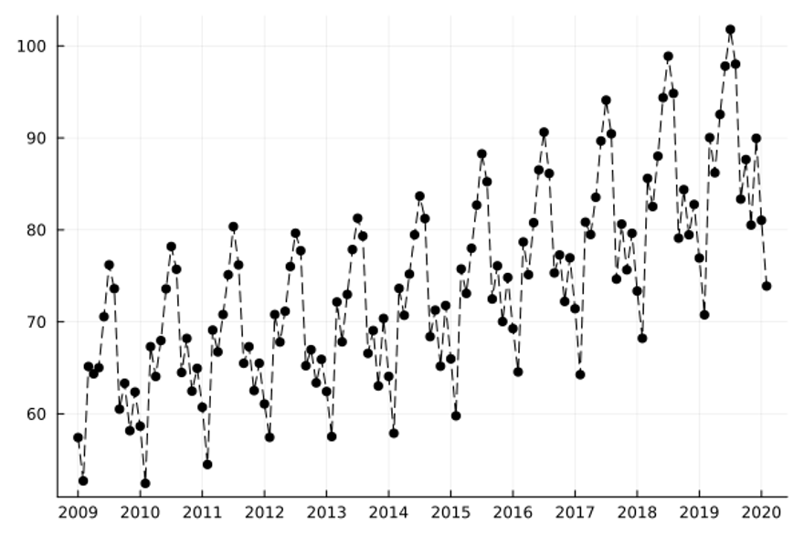
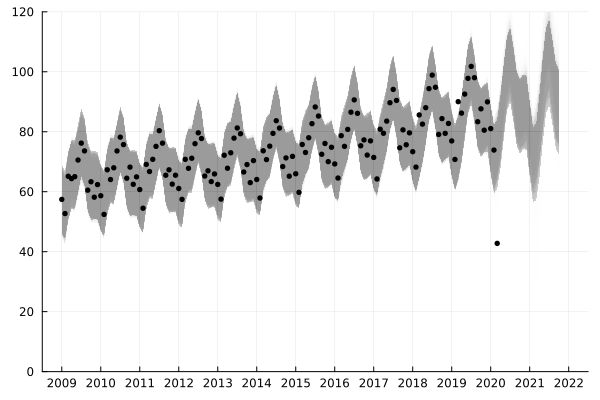
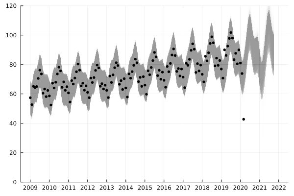

随便聊聊：贝叶斯概率编程
人们近年来在人工智能领域取得的进展，除了层出不穷的新算法，也仰仗硬件算力的提升并得益于编程语言层面对自动微分和张量运算的支持。 基于神经网络的机器学习在很多应用中取得了成功，但在一些方面也尚存不足，例如对预测结果信度的评估1，纳入领域知识的方法2，以及在观测数据的分布发生改变时的鲁棒性3。 贝叶斯推断（Bayesian Inference）是一种历史悠久的、基于概率的贝叶斯解释（而非频率解释）的、在上述三个方面有一些优势的机器学习方法，其核心在于通过观测数据来估计模型假设空间的概率分布，而非选择出单个“最优”假设：设 $\Theta$ 为假设空间、$x$ 为观测数据，每个假设 $\theta \in \Theta$ 具有一个先验概率 $\mathbb{P}(\theta)$，而一个贝叶斯模型则描述了观测数据在给定假设下的条件概率 $\mathbb{P}(x \mid \theta)$，那么由贝叶斯法则，我们可用观测数据更新模型假设的后验概率： $$ \mathbb{P}(\theta \mid x) = \frac{ \mathbb{P}(x \mid \theta) \mathbb{P}(\theta) }{ \sum_{\theta’ \in \Theta} \mathbb{P}(x \mid \theta’) \mathbb{P}(\theta’) } \qquad (\theta \in \Theta). $$ 基于贝叶斯推断的机器学习也被称为贝叶斯机器学习4 5。 然而，相比基于梯度下降等算法的机器学习方法，贝叶斯推断的计算复杂度更高，这阻挡了贝叶斯机器学习在更多领域、更大模型上的应用。
为了更快更好地进行贝叶斯推断，概率编程6逐渐成为一个活跃的研究领域。 概率编程旨在分离描述概率模型和进行贝叶斯推断这两个步骤，通过良好的编程语言设计来支持丰富的模型种类，通过编程语言的各类技术（如编译优化、动态分析、元编程等）来自动、高效地进行贝叶斯推断。 人们已经设计、开发了多个概率编程语言（如 Stan、Pyro、Gen.jl 等），但如何平衡正确性和灵活性仍然是该领域的一个重要研究问题。 一方面，设计有语义限制的概率编程语言并提供特化的推断算法，可以保证正确性和高效性，但是语言可表达的模型种类受限，也难以重用已有的非概率的计算模块；另一方面，使用通用编程语言来描述概率模型，并允许用户对通用推断算法进行定制，可以满足灵活性和一定程度上的高效性7 8，但是用户定制会使得正确性的保证变得困难。 正如自动微分框架驱动了基于神经网络的机器学习的发展，我们期待一个正确而灵活的概率编程框架能驱动贝叶斯机器学习的进一步发展和流行。
在这里，我们看一个使用概率编程来进行时间序列的在线学习的例子9。 该例子希望学习并预测美国的月度民航总里程数的走势（数据来源）。下图为 2009 年 1 月至 2020 年 2 月的数据：  在贝叶斯机器学习中，高斯过程回归（Gaussian Process Regression）是一种灵活的算法，该方法允许我们使用核函数（Kernel Function）来定制多元高斯分布的的协方差矩阵。 通过概率编程，我们可以不用预先指定使用什么形式的核函数，而是写一段程序来声明核函数形式的先验概率分布（换句话说，我们可以把结构的选择也纳入模型假设 $\theta$ 中）。 下面的代码通过概率上下文无关文法（Probabilistic Context-Free Grammar）的方式实现了这样的一个先验概率分布：
{kind=link}
type kernel =
| Constant of float | Linear of float | ... | Plus of kernel * kernel | ...
let rec kernel_prior () =
let kernel_type = categorical [0.2; 0.2; 0.2; 0.2; 0.1; 0.1] in
match kernel_type with
| 0 -> Constant (rand ())
(* Constant (C): k(x, x') = C *)
| 1 -> Linear (rand ())
(* Linear (C): k(x, x') = (x - C) * (x' - C) *)
...
| 4 -> Plus (kernel_prior (), kernel_prior ())
(* Plus (k1, k2): k(x, x') = k1(x, x') + k2(x, x') *)
...
结合序列蒙特卡洛（Sequential Monte Carlo）方法，我们可以实现一个基于高斯过程的时间序列的在线学习算法，该算法可以估计预测的不确定性，并在数据分布发生改变时即时响应。
下面这个动画展示了在线学习的效果，其中灰色的区域为使用 100 个对后验概率分布的采样做出的 95% 置信度预测区间的叠加：
 可以看出，在数据比较多的时候，算法已经对整个趋势的掌握已经非常不错了。而下面的动画则展示在 2020 年 2 月之后的数据上的效果：

很明显，新冠疫情导致了民航数据的突变，而基于贝叶斯推断的在线学习可以及时对这种变化进行响应并调整之后的预测。
可以看出，在数据比较多的时候，算法已经对整个趋势的掌握已经非常不错了。而下面的动画则展示在 2020 年 2 月之后的数据上的效果：

很明显，新冠疫情导致了民航数据的突变，而基于贝叶斯推断的在线学习可以及时对这种变化进行响应并调整之后的预测。
{kind=link}
-
Chuan Guo, Geoff Pleiss, Yu Sun, and Kilian Q. Weinberger. 2017. On Calibration of Modern Neural Networks. ICML'17. ↩︎
-
Nikhil Muralidhar, Mohammad Raihanul Islam, Manish Marwah, Anuj Karpatne, and Naren Ramakrishnan. 2018. Incorporating Prior Domain Knowledge into Deep Neural Networks. ICBD'18. ↩︎
-
Dario Amodei, Chris Olah, Jacob Steinhardt, Paul Christiano, John Schulman,and Dan Mané. 2016. Concrete Problems in AI Safety. https://arxiv.org/abs/1606.06565 ↩︎
-
Zoubin Ghahramani. 2015. Probabilistic machine learning and artiicial intelligence. Nature, 521. ↩︎
-
Joshua B. Tenenbaum, Charles Kemp, Thomas L. Grifiths, and Noah D. Goodman. 2011. How to Grow a Mind: Statistics, Structure, and Abstraction. Science, 331, 6022. ↩︎
-
Jan Willem van de Meent, Brooks Paige, Hongseok Yang, and Frank Wood. 2018. An Introduction to Probabilistic Programming. https://arxiv.org/abs/1809.10756 ↩︎
-
Vikash K. Mansinghka, Ulrich Schaechtle, Shivam Handa, Alexey Radul, Yutian Chen, and Martin C. Rinard. 2018. Probabilistic Programming with Programmable Inference. PLDI'18. ↩︎
-
Eli Bingham, Jonathan P. Chen, Martin Jankowiak, Fritz Obermeyer, Neeraj Pradhan, Theofanis Karaletsos, Rishabh Singh, Paul Szerlip, Paul Horsfall, and Noah D. Goodman. 2018. Pyro: Deep Universal Probabilistic Programming. J. Machine Learning Research, 20, 1. ↩︎
-
Feras A. Saad, Marco F. Cusumano-Towner, Ulrich Schaechtle, Martin C. Rinard, and Vikash K. Mansinghka. 2019. Bayesian Synthesis of Probabilistic Programs for Automatic Data. POPL'19. ↩︎